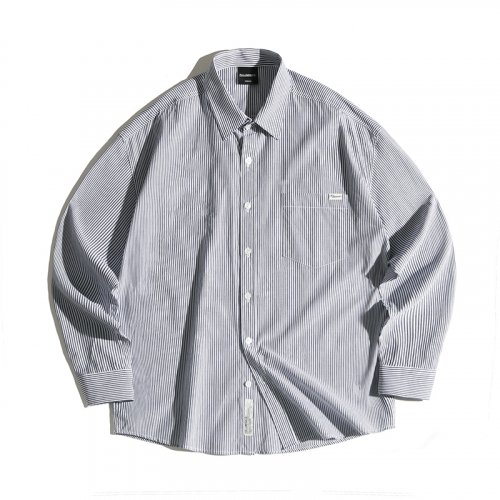
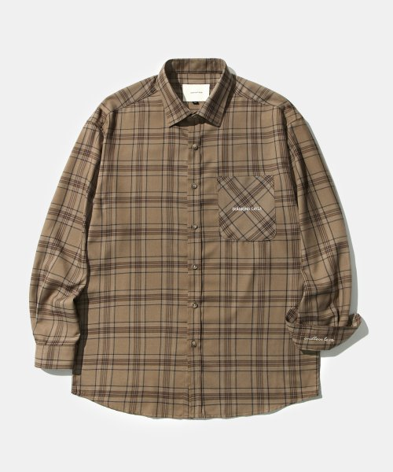

릴랙스 핏의 실키 셔츠
미니멀한 디자인으로 자연스럽게 흐르는듯한 여유 있는 실루엣이 특징이다.
은은한 광택을 가진 실키한 폴리에스터 원단을 사용해 부드러운 촉감과 쾌적한 착용감을 느낄 수 있다. 8%의 폴리우레탄이 포함되어 신축성이 뛰어나며 덕분에 편안하고 자유로운 활동성을 제공한다. 또한 소재 특성상 일반적인 면 소재의 셔츠들에 비해 구김이 적고 관리가 용이하다.
셔츠만을 전문으로 제작하는 업체의 대형 공장에서 제작해 꼼꼼한 봉제와 엄격한 검품 과정을 통해 높은 완성도를 보여준다.

F/W 시즌에 빠져서는 안 될 필수템 중 하나는 바로 체크 셔츠. 아노블리어의 세미 오버핏 타탄체크 셔츠는 가을 필수템 역할을 톡톡히 해낸다. 여유롭게 입기 좋은 실루엣과 과하지 않은 체크 패턴이 가을 무드를 물씬 더해준다. 단독으로 입거나 쌀쌀한 날씨에 터틀넥 니트와 함께 매치해보자. 네이비, 카키, 아이보리 등 다양한 컬러로 선택의 폭을 넓혔다

요즘처럼 열사병과 냉방병이 함께 오는 시기에는 가볍게 걸칠 아이템이 필요하다. 이를테면, 다이아몬드 레이라의 셔츠처럼 캐주얼한 무드를 자아내는 아이템. 슬랙스와 함께해도 좋고 데님 팬츠 또는 코튼 팬츠와 함께해도 좋다. 어디서나 가볍게 걸치고 온도 차를 이겨내보자.